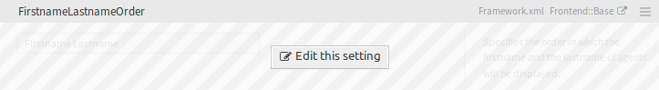

System Configuration¶
Modern systems have many ways to configure their behavior. Some use configuration files edited on the command line, and some use a graphical interface (and save the information to configuration files in the background), yet others use a database. Maintaining changes and auditing can sometimes be an issue, as it’s not always clear who made a change. Making bulk changes is not always possible, and rolling back changes a chore.
OTRS uses a comfortable graphical interface to configure the system. All changes to the default system configuration are stored in the database and can be audited (who changed a setting and when, what was the old and what is the new value) and rolled back to a previous state in case of misconfiguration.
Comfortable search allows finding the needed settings quickly and easily.
See also
By using the System Configuration History package, you can easily roll back changes made by users. Contact sales@otrs.com to add this feature to your system.
Use this screen to manage the system configuration settings. OTRS brings about 2200 configuration settings. The system configuration management screen is available in the System Configuration module of the Administration group.
Manage System Configurations¶
Note
For security reasons, the configuration settings for the database connection cannot be changed in the graphical user interface of the system configuration. These have to be set manually in Kernel/Config.pm.
To modify a system configuration, you need to do several steps. The following example shows you, how to find, modify, deploy and reset the system configuration FirstnameLastnameOrder.
Find the system configuration by entering a search term
lastnameinto to search box.With the full-text search, all configuration settings can be scanned for one or more keywords. The full-text search not only searches through the names of the configuration settings, but also the descriptions and values. This allows an element to be found easily even if its name is unknown.

System Configuration - Search For Setting
Select the setting from the search results.

System Configuration - Setting Found
Click on the header of the widget to see the options.

System Configuration - Setting Expanded
Hover the mouse over the widget body to see the Edit this setting button.
System Configuration - Setting Hovered
Click on the Edit this setting button to activate the edit mode. In edit mode the widget gets an orange border on the left.
Note
If a setting is currently edited by another administrator, it is not possible to get access to the edit mode for that setting until the other administrator finished their work.

System Configuration - Setting Clicked
Change the value of the setting. Editing can be cancelled by clicking the Cancel button on the right or hitting the Escape key on your keyboard. When editing is cancelled, all changes made during the current editing session are discarded.

System Configuration - Setting Modified
Click on the Save button. If the modification is saved, the widget gets a green border on the left.

System Configuration - Setting Saved
Go back and click on the Deployment button in the left sidebar. You are also notified in the notification bar, that you have undeployed settings.

System Configuration - Setting Changes
Review the changes.
You can click on the ⇄ button in the top right corner to compare the changes side-by-side.

System Configuration - Setting Different
- Click on the Deploy selected changes button. If several settings are changed, it is possible to deploy only the selected settings.
- Add a deployment comment, that explain for other administrators, what is changed and why. Use full sentence here.

System Configuration - Deploy Setting
- Go back and search again the term
lastnameto find the modified setting. The widget has a gray border on the left to indicate, this setting is modified.

System Configuration - Setting Deployed
- To reset the setting, click on the header of the widget to see the options. Then click on the Reset setting button.

System Configuration - Reset Setting
- Click on the Confirm button.
- Deploy the settings.
Using The Navigation Tree¶
Each configuration setting is classified by a category and a navigation group. Navigation groups are individual elements in the main navigation tree. By selecting one of these navigation entries, all settings assigned to the selected group will be shown. As long as no extensions are installed, the category selection is automatically hidden, but as soon as a package is installed which brings its own configuration settings (such as ITSM modules or Survey), the category selection will be revealed. Selecting a category makes the main navigation tree show only the navigation groups belonging to the selected category.

System Configuration Navigation Tree
To expand an element, click on the arrow next to it. The number between the parentheses indicates how many settings belongs to this element. If an element has no number, this element is only a wrapper category. It doesn’t have settings, it has only sub-categories.
Using the navigation tree results the same as search for a setting. If you would like to see for a setting to which group belongs to, expand it by clicking on the header of the widget.
System Configuration - Setting Expanded
For example FirstnameLastnameOrder can be found in Frontend → Base.
Import And Export System Configurations¶
Click on the Import & Export button in the left sidebar to access the import-export screen.

System Configuration - Import and Export
To export the system configurations:
- Click on the Export current configuration button in the Export widget.
- Save the
Export_Current_System_Configuration.ymlfile to your local file system. - Rename the file to a more descriptive name.
To import the system configurations:
- Click on the Browse… button in the Import widget.
- Select a previously exported
.ymlfile. - Click on the Import system configuration button.